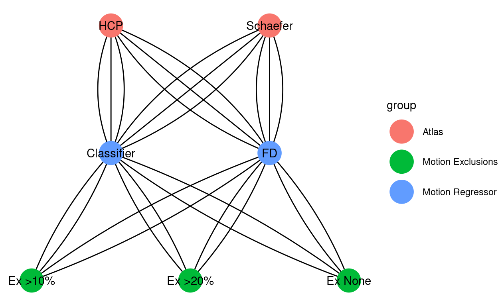
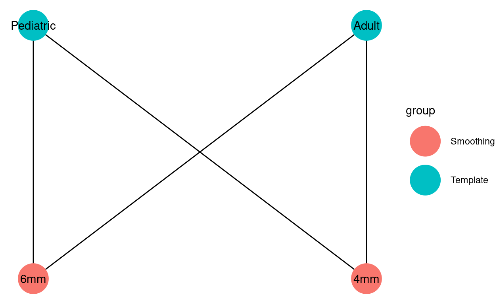
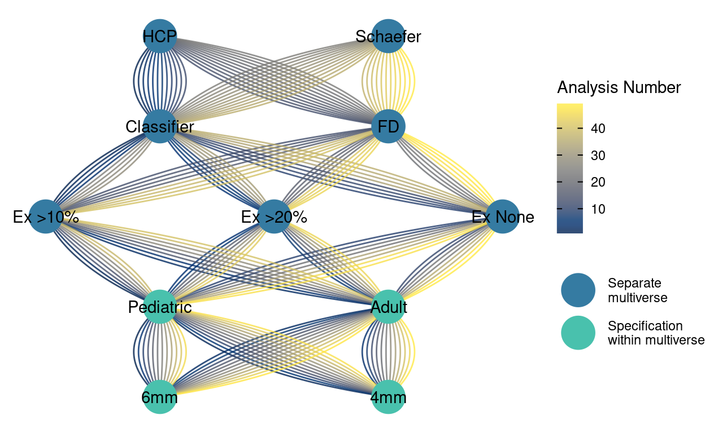

Preregistration Example
1 Research question (construct-level)
How is pubertal development related to neural activation during self-referential processing?
(Note: added after considering certain Type U decisions) Does the association between puberty and self-referential processing vary depending on the ROI and contrast; and which measure of puberty provides the best-fitting model?
2 Decisions
2.1 Covariates (other constucts)
N/A
2.2 Causal model(s)
N/A
2.3 Measurements of constructs
2.3.1 Self-referential processing contrast
The task consisted of self-referential processing of
- prosocial
- anti-social
- and withdrawn
trait descriptors, contrasted against these same adjectives in a non-social setting.
2.3.2 fMRI Data
BOLD contrast estimates from a self-evaluation task while undergoing functional neuroimaging (Barendse et al. 2020).
Mean contrast estimates from each participant at each wave were extracted from
- pgACC
- sgACC
- vmPFC
- PCC
2.3.3 Pubertal development
- Pubertal Development Scale
- Tanner Stage Line Drawings 3, Salivary DHEA
- Salivary testosterone
- Salivary estradiol
2.4 Processing of measurements
2.4.1 ROI Atlas
We extracted data from ROIs defined from parcels using
- HCP atlas
- Schaefer 400 atlas
2.4.2 Motion regressors
We included a motion “trash” regressor in the first-level modeling defined by
- Framewise displacement > .75mm
- Artifact prediction from the auto-motion-fmriprep classifie (Cosme, Flournoy, and DeStasio 2018)
2.4.3 Noramalization template
We normalized (i.e., registered) scans to
- Pediatric template
- Adult template
2.4.4 Smoothing Kernel
We smoothed by
- 6mm
- 4mm
2.5 Sample composition
2.5.1 Motion exclusions
We kept particpants who had
- Any amount of trash-regressor trials
- >80% non-trash-regressor trials
- >90% non-trash-regressor trials
3 Decision types
3.1 Type E
- Normalization template
- Smoothing kernel
3.2 Type N
- Exclusion criteria
Although exclusion criteria change the sample size, which changes power and precision, not excluding bad data may negatively impact precision or lead to bias, so we choose to examine these choice options.
3.3 Type U
- Parcellation atlas
- Motion (trash) regressors
3.4 Statistical comparison of Type U decisions
We started out identifying choice of region of interest in the social brain as a potential Type U decision. Does it matter whether we use data from ventro-medial prefrontal cortext (vmPFC) or posterior cingulate cortex (PCC)? Instead of examining several different multiverses for each ROI to examine the robustness of the effect size or significance of our association of interest, we could test this question in a model-based way. We also decided that choice of pubertal measure and self-referential processing contrast could be examined via model comparison (but see Byrne et al. 2019 regarding the measurement structure of puberty).
Therefore we decided to additionally examine the question: does the association between puberty and self-referential processing vary depending on the ROI and contrast; and which measure of puberty provides the best-fitting model?
4 Organizing the multiverse
We will define a number of multiverses using the combination of parcellation atlas (U; 2 options), motion regressor (U, 3 options) and exclusion criteria (N, 3 options), for a total of 18 (Figure 1). Within each multiverse, analytic specifications comprise combinations of normalization template (2 options) and smoothing kernel (2 options) for a total of 4 (Figure 2).

This organizational chunking, with a separate multiverse for each combination of decisions with incompatible options that itself contains multiple speficications that are combinations of decisions with reasonably interchangable options brings conceptual structure that aids interpretation and reduces combinatorial explosion. To get a sense of the complexity, the full picture of all possible analytic paths can be visualized as a single network diagram (Figure 3)

5 Model definitions
For each measure of puberty we constructed a hierarchical linear model regressing neural activity on the pubertal measure, an indicator for ROI, and an indicator for the adjective-type contrast. We fit four models allowing these variables to interact, or not:
m <- lmer( BOLD ~ puberty + ROI + contrast + (1 | id) )m <- lmer( BOLD ~ puberty * ROI + contrast + (1 | id) )m <- lmer( BOLD ~ puberty * contrast + ROI + (1 | id) )m <- lmer( BOLD ~ puberty * ROI * contrast + (1 | id) )
Importantly, the BOLD data for each model is identical, though we “stack” data from multiple ROIs and contrasts. Each model is repeated for each puberty measure.
6 Criterion of interest
The criterion of interest is, primarily, the AIC difference between best of the the 4 x 5 (pubertal measure) models and the rest.
7 Interpretation and Decision process
AIC differences <10 will be considered equivolcal. Consistency of lowest AIC across analyses will be considered evidence of robustness to specifications. Additionally, we will interpret models with the lowest AIC if they are robust across specifications.
Non-robustness across Type U or Type N decisions will be discussed.
8 References
Barendse, Marjolein E. A., Danielle Cosme, John C. Flournoy, Nandita Vijayakumar, Theresa W. Cheng, Nicholas B. Allen, and Jennifer H. Pfeifer. 2020. “Neural Correlates of Self-Evaluation in Relation to Age and Pubertal Development in Early Adolescent Girls.” Developmental Cognitive Neuroscience 44 (August): 100799. https://doi.org/10.1016/j.dcn.2020.100799.
Byrne, Michelle L., Samantha Chavez, Nandita Vijayakumar, Theresa W. Cheng, John Flournoy, Marjolein Barendse, Elizabeth A. Shirtcliff, Nick Allen, and Jennifer Pfeifer. 2019. “Multi-Method Confirmatory Factor Analyses of Puberty in Early Adolescent Girls.” PsyArXiv. https://doi.org/10.31234/osf.io/pue6f.
Cosme, Dani, John C. Flournoy, and Krista DeStasio. 2018. “Dsnlab/Auto-Motion: In House.” Zenodo. https://doi.org/10.5281/zenodo.1240528.